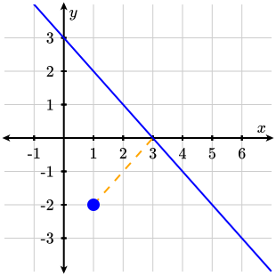
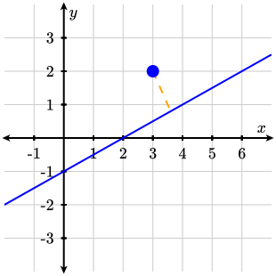

Let \(\mathbf{a}=\langle x_1, y_1 \rangle\) and \(\mathbf{b}=\langle x_2, y_2 \rangle\text{.}\) Match each formula, identity, or expression to its corresponding definition.
Match each of the given expressions on the left to its corresponding graph on the right. You may assume that \(t\) is increasing. Note the end behavior of \(\arctan(x)\text{.}\)
A graph of a circle on coordinate axes with \(x\)-values and \(y\)-values from \(-3\) to \(3\text{.}\) The circle is centered at \((-1,2)\) with radius \(1\) in the clockwise direction.
A graph of an ellipse on coordinate axes with \(x\)-values and \(y\)-values from \(-3\) to \(3\text{.}\) The ellipse is centered at \((1,-1)\) with vertical radius \(2\) and horizontal radius \(1\) in the counterclockwise direction.
A graph of an ellipse on coordinate axes with \(x\)-values and \(y\)-values from \(-3\) to \(3\text{.}\) The ellipse is centered at \((-1,2)\) with vertical radius \(1\) and horizontal radius \(2\) in the clockwise direction.
A graph of a circle on coordinate axes with \(x\)-values and \(y\)-values from \(-3\) to \(3\text{.}\) The circle is centered at \((1,-1)\) with radius \(2\) in the clockwise direction.
A graph of a trigonometric function on coordinate axes with \(x\)-values and \(y\)-values from \(-3\) to \(3\text{.}\) The function has an \(s\) shape and passes through the point \((0,0)\text{,}\) terminating on the left at \(x=-1\) and terminating on the right at \(x=1\text{.}\)
A graph of a circle on coordinate axes with \(x\)-values and \(y\)-values from \(-3\) to \(3\text{.}\) The circle is centered at \((1,-1)\) with radius \(1\) in the counterclockwise direction.
A graph of a trigonometric function on coordinate axes with \(x\)-values and \(y\)-values from \(-3\) to \(3\text{.}\) The function has an \(s\) shape and passes through the point \(\left(0,\dfrac{\pi}{2}\right)\text{,}\) terminating on the left at \(x=-1\) and terminating on the right at \(x=1\text{.}\)
A graph of an ellipse on coordinate axes with \(x\)-values and \(y\)-values from \(-3\) to \(3\text{.}\) The ellipse is centered at \((-1,2)\) with vertical radius \(1\) and horizontal radius \(2\) in the counterclockwise direction.
A graph of a trigonometric function on coordinate axes with \(x\)-values and \(y\)-values from \(-3\) to \(3\text{.}\) The function has horizontal asymptotes at \(y=\pm\dfrac{\pi}{2}\) and passes through the point \((0,0)\text{.}\)
Find the distance from the point \(\text{P}=(1,-2)\) to the line \(y=-x+3\text{.}\)

A graph of the line \(y=-x+3\) and the point \(\text{P}=(1,-2)\) on coordinate axes with \(x\)-values from \(-1\) to \(6\) and \(y\)-values from \(-3\) to \(3\text{.}\)
Find the distance from the point \(\text{P}=(3,2)\) to the line \(y=\dfrac{1}{2}x-1\text{.}\)

A graph of the line \(y=\dfrac{1}{2}x-1\) and the point \(\text{P}=(3,2)\) on coordinate axes with \(x\)-values from \(-1\) to \(6\) and \(y\)-values from \(-3\) to \(3\text{.}\)
The work \(\text{W}\) (in Joules (\(\text{J}\))) done by a force \(\mathbf{F}\) with a displacement \(\mathbf{d}\) is given by the formula \(\text{W}=\mathbf{F}\cdot\mathbf{d}\) or \(\text{W}=|\mathbf{F}||\mathbf{d}|\cos(\theta)\) where \(\theta\) is the angle between \(\mathbf{F}\) and \(\mathbf{d}\text{.}\)
Find the work done by the force \(\mathbf{F}=6\mathbf{i}+2\mathbf{j}\) with a displacement vector \(\mathbf{d}=-\mathbf{i}+3\mathbf{j}\text{.}\) What else can you say about the vectors \(\mathbf{F}\) and \(\mathbf{d}\text{?}\)
Find the work done by the force \(\mathbf{F}\) with a displacement vector \(\mathbf{d}\) if \(|\mathbf{F}|=8\text{,}\)\(|\mathbf{d}|=6\text{,}\) and \(\theta=\dfrac{\pi}{4}\text{.}\)
Suppose that a box has been pulled \(15\text{ m}\) up a \(30^\circ\) incline by a rope with a force \(\mathbf{F}\) with a magnitude \(|\mathbf{F}|=100\text{ N}\text{.}\) Note that the reference angle for work problems is always taken from the direction of motion.
A sled is dragged \(10\text{ m}\) up a \(15^\circ\) incline under a constant force of \(20\text{ N}\) applied at an angle of \(30^\circ\) to the ramp. Find the work done by the force on the sled.
If \(\mathbf{a}=6\mathbf{i}-4\mathbf{j}\) and \(\mathbf{b}=-2\mathbf{i}+2\mathbf{j}\text{,}\) then find \(\text{proj}_{\mathbf{b}}(\mathbf{a})\text{.}\)